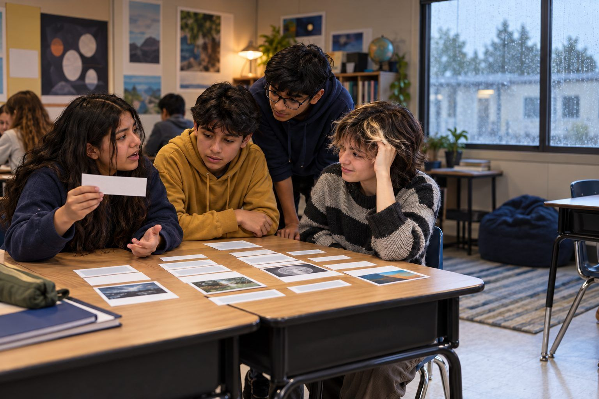

Student learning · Grades 6–8, Grades 9–12 · 55 minutes
AI Study Buddy Contract
Students sort AI uses that build learning from ones that replace it, then write a SMART goal, a personal AI contract, and an honest-use log they keep for two weeks.
AI can quiz you, explain a tricky idea a new way, or give feedback on a draft. It can also do the thinking for you, so the assignment gets done but nothing gets learned. In this activity, students sort realistic AI uses into "builds my learning," "replaces my learning," and "depends, check the rules." Then they compare two teacher-projected AI responses to the same request, set a SMART learning goal, and write a personal AI Study Buddy Contract with an honest-use log. The question at the center: did the tool make me smarter, or just make the work look done?
In this packet
- Handout A: Builds It or Replaces It? Sort (card sort)
- Handout B: My AI Study Buddy Contract (worksheet)
- Handout C: Honest-Use Log (organizer)
- Facilitator key (last page)
TCEA ELE indicators
- S4.1 I know how to take responsibility for my own learning.
- S4.2 I can set achievable goals and monitor my progress.
- S4.3 I am aware of my learning strengths and areas for improvement.
- AI2.1 I know how to apply ethical principles when using or developing AI for education.
- S1.3 I am aware of how AI can assist me in my studies.
Full facilitator guide: mglearn.github.io/eles/activities/ai-study-buddy-contract.html
Handout A for AI Study Buddy Contract
Builds It or Replaces It? Sort
Place each strip in a category and agree on one reason. Check your class AI rules for the "Depends" pile.
Builds my learning
Replaces my learning
Depends, check the rules
Handout A for AI Study Buddy Contract
Builds It or Replaces It? Sort: cards to sort
Cut apart the strips. Sort each one onto the mat and be ready to explain why.
Asking AI to quiz me on vocabulary one word at a time before a test.
Asking AI to write my book report, then turning it in as mine.
Asking AI to explain fractions a different way after I didn't understand the lesson, then trying practice problems on my own.
Asking AI to solve all 20 math homework problems and copying the answers.
Asking AI to fix the grammar in my science lab report.
Writing my own essay draft first, then asking AI which paragraph has the weakest evidence.
Asking AI to summarize a chapter so I don't have to read it.
Using AI to brainstorm ten topic ideas for a project, then choosing and researching one myself.
Asking AI to check my answer after I finish a problem, then figuring out where I went wrong.
Asking AI to translate a reading into my home language so I can understand it, then answering questions in English.
Having AI write my reflection about what I learned this week.
Asking AI to make a practice test from my class notes and then taking it without looking.
Handout B for AI Study Buddy Contract
My AI Study Buddy Contract
Be honest. This contract is for you. It should match your class AI rules.
Know myself: one learning strength I have, one area where I get stuck, and what I usually do when I'm stuck:
My SMART goal for the next two weeks (Specific, Measurable, Achievable, Relevant, Time-bound):
Three ways I WILL use AI (or another study buddy) to build my learning toward this goal:
Two ways I WON'T use AI, and why:
How I'll show my own thinking (drafts, notes, explanations in my own words):
How I'll tell my teacher when AI helped (what I'll write or say):
Partner's question for me, and my answer:
Signed (me): ______________ Witness (partner): ______________ Date: ________
Handout C for AI Study Buddy Contract
Honest-Use Log
Fill in one row every time you study toward your goal, with or without AI. "No AI" is a perfectly good entry.
| Date + task | What I asked (or "no AI") | What I did with the answer | What I learned or changed | Did it build or replace my learning? |
|---|---|---|---|---|
| Example: Mon, rocks review | "Quiz me on igneous, sedimentary, and metamorphic rocks, one question at a time." | Answered 6 questions; got 2 wrong and reread my notes on those. | I mixed up sedimentary and metamorphic. Now I remember: heat and pressure = metamorphic. | Built it: I did the thinking. |
Facilitator only for AI Study Buddy Contract
Answer key and notes
Handout A: Builds It or Replaces It? Sort
| Item | Sort | Why |
|---|---|---|
| Asking AI to quiz me on vocabulary one word at a time before a test. | Builds my learning | I do the remembering; the tool just asks the questions. |
| Asking AI to write my book report, then turning it in as mine. | Replaces my learning | The AI did the reading and thinking, and it isn't honest. |
| Asking AI to explain fractions a different way after I didn't understand the lesson, then trying practice problems on my own. | Builds my learning | A new explanation plus my own practice builds understanding. |
| Asking AI to solve all 20 math homework problems and copying the answers. | Replaces my learning | I skip the practice the homework is for. |
| Asking AI to fix the grammar in my science lab report. | Depends, check the rules | Fine if grammar isn't what's being assessed and I disclose it. Not fine if it is. |
| Writing my own essay draft first, then asking AI which paragraph has the weakest evidence. | Builds my learning | My thinking comes first; I decide what to do with the feedback. |
| Asking AI to summarize a chapter so I don't have to read it. | Replaces my learning | I miss the reading, and summaries can leave out or change things. |
| Using AI to brainstorm ten topic ideas for a project, then choosing and researching one myself. | Depends, check the rules | Often allowed, but some projects grade idea generation. I should disclose it either way. |
| Asking AI to check my answer after I finish a problem, then figuring out where I went wrong. | Builds my learning | I do the work first and learn from the mistake. |
| Asking AI to translate a reading into my home language so I can understand it, then answering questions in English. | Depends, check the rules | Often a helpful support. Check with the teacher, and remember translations can have errors. |
| Having AI write my reflection about what I learned this week. | Replaces my learning | A reflection is only useful if it's my own thinking. |
| Asking AI to make a practice test from my class notes and then taking it without looking. | Builds my learning | Retrieval practice from my own notes. I still check that the questions match what we learned. |